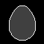
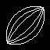
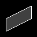
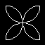
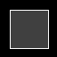
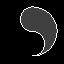

Shapes
- XLogo library of procedures
These procedures draw various shapes. Copy and paste into the Editor window as usual. Many are found in programs throughout this site. They are all transparent (turtle position and heading left unchanged). They assume turtle PenUp when called and leave the pen raised when finished.
Some of these procedures use the rArc, LeftArc, RightArc or Arch arc procedures. You'll need to copy and paste these too.
Some shapes cannot be filled from the centre. Their procedures contain a global Offset, which can be used to correctly position the turtle.
Download complete library of shape procedures here.
To Annulus :Size
# annulus shape drawn from centre (tp)
Make "Offset :Size/3 # global offset fill
Circle :Size/2
Circle :Size/4
End
Bean
Uses rArc procedure.
To Bean :Size
# bean shape drawn from centre (tp)
Make "Offset :Size/3 # global offset fill
rArc 180 :Size/2
Forward :Size/3 rArc 180 :Size/6
Forward :Size/3 rArc 180 :Size/6
Back :Size/3 rArc 180 :Size/6
Back :Size/3
# return to centre
End
Burst
Draw star Burst with radiating spokes.
Used in DemoStar and Scintillate.
To Burst :Spokes :Radius
# star burst drawn from centre (tp)
Repeat :Spokes [
PenDown Forward :Radius
PenUp Back :Radius
Right 360/:Spokes Wait 2]
End
Button
Draw a square button with rounded corners. The value of side is the total
width of the button. The corners need to be less than half the side. If
not, a different shape is drawn (try it and see).
Uses LeftArc procedure.
Used in 15
Puzzle.
To Button :Size :Corner
# rounded corner shape drawn from centre (tp)
Back :Size/2 Right 90 Back :Size/2-:Corner PenDown
Repeat 4 [Forward :Size-2*:Corner LeftArc 90 :Corner]
PenUp Forward :Size/2-:Corner Left 90 Forward :Size/2 # return to centre
End
To Chevron :Size
# chevron shape drawn from centre (tp)
Make "Offset :Size/4 # global offset fill
PenDown Left 45
Forward 1.414*:Size/2 Right 135 Forward :Size/2
Right 45 Forward 1.414*:Size/2 Right 90 Forward 1.414*:Size/2
Right 45 Forward :Size/2 Right 135 Forward 1.414*:Size/2
Left 45 PenUp
End
Clam
Draw clam shape used in some illusions. Similar to lens shape but slightly fatter, with white topside and black underside.
To Clam :Size
# optical clam shape drawn from centre (tp)
SetPC White Back :Size/3 Arch 112 0.6*:Size
Forward :Size/3 Left 180
SetPC Black Back :Size/3 Arch 112 0.6*:Size
Forward :Size/3 Left 180
End
Clover
Draw lucky 3 leaf clover shape. See CloverLeaf shapes.
Uses Arch procedure.
To Clover :Size
# clover shape drawn from centre (tp)
Repeat 3 [
Forward :Size/3.74 Arch 300 0.23*:Size
Back :Size/3.74 Left 120]
End
To Cross :Side
# cross drawn from centre (tp)
Back :Side/2 Right 90 Back :Side/3 PenDown
Repeat 4 [
Forward :Side/1.5 Left 116.57
Forward :Side/2.7 Right 143.14
Forward :Side/2.7 Left 116.57]
PenUp Forward :Side/3 Left 90 Forward :Side/2 # r2c
End
Egg
Uses rArc procedure.
To Egg :Size
# egg shape drawn from centre (tp)
Make "Size :Size/1.3
Forward :Size/2.9 Left 45 rArc 90 0.292*:Size
Back :Size/1.414 rArc 45 :Size
Forward :Size/2 rArc 180 :Size/2
Back :Size/2 rArc 45 :Size
Forward :Size/1.414 Right 45 Back :Size/2.9
# r2c
End
Heart
Uses rArc procedure.
To Heart :Size
# heart shape drawn from centre (tp)
Forward :Size/4 ForEach "P [1 -1] [ # parity
Left :P*90 Forward :Size/4 Right :P*90
Arch 180 :Size/4 Right :P*90 Back :Size/15 Right :P*33.5
Arch 67 49*:Size/60
Left :P*33.5 Forward 19*:Size/60 Left :P*90]
Back :Size/4 # return to centre
End
Horseshoe
Uses Arch procedure.
Used in Shapes.
To Horseshoe :Size
# horseshoe shape drawn from centre (tp)
Make "Offset :Size/3 # global offset fill
Arch 180 :Size/2 Arch 180 :Size/4
ForEach "P [1 -1] [ # parity
Left :P*90 Back :Size/2 Left :P*12.75
Arch 25.5 :Size Arch 25.5 0.75*:Size Left :P*12.75
Forward 0.875*:Size Left :P*90 Arch 180 :Size/8
Right :P*90 Back 0.875*:Size Right :P*25.5
Forward :Size/2 Right :P*90]
End
Kite
Used in Edge and Kite Tree.
To Kite :Size
# kite shape drawn from centre (tp)
Back :Size/2 PenDown
Left 18.4 Forward :Size/1.26 Right 63.4
Forward :Size/2.82 Right 90 Forward :Size/2.82
Right 63.4 Forward :Size/1.26
PenUp Right 161.6 Forward :Size/2 # return to centre
End
Lens
Uses Arch procedure.
(The shapes used in LuneTree are
Lens shapes, drawn from one end to act as branches).
Used in Edge LuneTree TilePattern
To Lens :Size
# lens shape drawn from centre (tp)
Repeat 2 [
Back :Size/2 Arch 90 :Size/1.414
Forward :Size/2 Left 180]
End
Lenses
See Lens Shapes.
Lune
Uses Arch procedure.
To Lune :Size
# lune shape drawn from centre (tp)
Make "Offset :Size/3 # global offset fill
Arch 240 :Size/2 Back :Size/2
Arch 120 :Size/2 Forward :Size/2
End
Occitan
Uses Arch procedure.
To Occitan :Size
# occitan shape drawn from centre (tp)
Repeat 2 [
Arch 90 :Size/2 Left 90 Back 1.414*:Size/2
Arch 90 :Size/2 Forward 1.414*:Size/2 Left 90]
End
Oval
Uses Arch procedure.
To Oval :Size
# oval shape drawn from centre (tp)
Repeat 2 [
Back :Size/4 Arch 90 :Size/1.66 Forward :Size/4 Left 90
Forward :Size/4 Arch 90 :Size/4 Back :Size/4 Left 90]
End
Parallelogram
Draw a parallelogram from the centre :Wide wide and :High high.
Subtract PenWidth from :Wide and :High for a parallelogram of
exact size.
Uses an optional variable :P of 1. Use a value of minus 1 for mirror image.
Used in TilePattern
To Pgram :Wide :High [:P 1]
# parallelogram shape drawn from centre (tp)
# default parity of 1, use minus 1 for mirror image
LocalMake "Ang ATan :Wide/(:High/2) # inner angle
LocalMake "Len :Wide/ Sin :Ang # side length
Back :High/4 Right :P*:Ang Back :Len/2 PenDown
Repeat 2 [
Forward :Len Left :P*:Ang Forward :High/2 Left :P*(180-:Ang)]
PenUp Forward :Len/2 Left :P*:Ang Forward :High/4 # r2c
End
Pebble
Draw a pebble from the centre :Wide wide and :High high.
Subtract PenWidth from :Wide and :High for a pebble of
exact size.
Uses LeftArc procedure.
See Pebble Shapes.
To Pebble :Wide :High
# pebble shape drawn from centre (tp)
LocalMake "Diff Abs :Wide-:High
If :Wide > :High
[LocalMake "Rad :High/2 LocalMake "Vert 0 LocalMake "Horiz :Diff]
[LocalMake "Rad :Wide/2 LocalMake "Vert :Diff LocalMake "Horiz 0]
PenUp Back :High/2 Right 90 Back :Horiz/2 PenDown
Repeat 2 [
Forward :Horiz LeftArc 90 :Rad Forward :Vert LeftArc 90 :Rad]
PenUp Forward :Horiz/2 Left 90 Forward :High/2 # return to centre
End
Polygon
Draw a polygon of 'N' sides, with width 'Wide'. The polygon is drawn from the centre.
To Polygon :N :Wide
# polygon of 'N' sides drawn from centre (tp)
Make "Side :Wide *Sin 180/:N # length of one side
Right 180/:N Back :Wide/2 Right 90-180/:N PenDown
Repeat :N
[Forward :Side Left 360/:N]
PenUp Left 90-180/:N Forward :Wide/2 Left 180/:N # return to centre
End
Propeller
Draw propeller shape.
See CloverWave shapes.
Uses Arch procedure.
To Propeller :Size
# propeller shape drawn from centre (tp)
Repeat 3 [
Forward :Size/3 Arch 240 :Size/6
Back :Size/3 Left 60
Forward :Size/3 Left 180 Arch 120 :Size/6 Left 180
Back :Size/3 Left 60]
End
Quad
Draw quad shape.
See CloverWave shapes.
Uses Arch procedure.
To Quad :Size
# quad shape drawn from centre (tp)
Repeat 4 [
Forward :Size/2.185 Left 180
Arch 135 :Size/5.7 Left 180
Back :Size/2.185 Left 45 Forward :Size/2.185
Arch 225 :Size/5.7 Back :Size/2.185 Left 45]
End
Quatquetra
Best to draw 4 Lens shapes if a filled Quatquetra needed.
Uses Arch procedure.
To Quatquetra :Size
# quatquetra shape drawn from centre (tp)
Repeat 4 [
Back :Size/2 Arch 180 :Size/2
Forward :Size/2 Left 90]
End
Rectangle
Draw a rectangle from the centre with sides of :Wide wide and :High high.
Subtract PenWidth from :Wide and :High for a rectangle
of exact size.
Used in Chequer, Swatches, White's
Illusion.
To Rectangle :Wide :High
# rectangle (wide x high) drawn from centre (tp)
Back :High/2 Right 90 Back :Wide/2 PenDown
Repeat 2 [
Forward :Wide Left 90 Forward :High Left 90]
PenUp Forward :Wide/2 Left 90 Forward :High/2 # r2c
End
Rhombus
Draw a rhombus from the centre with width :Size.
Subtract PenWidth from :Sizefor a rhombus of
exact size.
Uses an optional variable :P of 1. Use a value of minus 1 for mirror image.
Used in TilePattern
To Rhombus :Size [:P 1]
# rhombus shape drawn from centre (tp)
# default parity of 1, use minus 1 for mirror image
Back :Size/4 Right :P*63.4 Back :Size/1.79 PenDown
Repeat 2 [
Forward :Size/0.894 Left :P*63.4 Forward :Size/2 Left :P*116.6]
PenUp Forward :Size/1.79 Left :P*63.4 Forward :Size/4 # r2c
End
Right Angled Triangle
Draw a RAT from the centre with width :Size.
Used in TilePattern
To RightAngTri :Size
# right angled triangle drawn from centre (tp)
Back :Size/4 Right 45
PenDown Forward 1.414*:Size/2
Left 135 Forward :Size
Left 135 Forward 1.414*:Size/2 PenUp
Left 135 Forward :Size/4 # return to centre
End
Salinon
Uses rArc procedure.
To Salinon :Size
# salinon shape drawn from centre (tp)
rArc 180 :Size/2 rArc 180 :Size/6
Forward :Size/3 rArc 180 :Size/6
Forward :Size/1.5 Left 180 rArc 180 :Size/6
Left 180 Forward :Size/3
# return to centre
End
Sector
Inner and outer radius (Rad1 and Rad2) can be in either order. If either is zero, then a 'slice of pie' shape is drawn.
Uses Arch procedure.
Used in Eye.
To Sector :Angle :Rad1 :Rad2
# sector shape drawn from centre (tp)
Make "Offset (:Rad1+:Rad2) /2 # global offset fill
Arch :Angle :Rad1
Arch :Angle :Rad2 Left :Angle/2
Forward :Rad1 PenDown Forward (:Rad2-:Rad1)
PenUp Back :Rad2 Right :Angle
Forward :Rad1 PenDown Forward (:Rad2-:Rad1)
PenUp Back :Rad2 Left :Angle/2 # return to centre
End
Square
Draw a square from the centre with side length :Side.
Subtract PenWidth from :Side for a square of exact size.
Used in CloverArt, Condensation, Chessboard, GridArt, Assimilation, Bulge, CafeWall, Grid, Hermann, Intertwine, Marbles, Orbinson, KnightsTour, Partridge, Edge, SpinningSquares.
To Square :Side
# square (side x side) drawn from centre (tp)
Back :Side/2 Right 90 Back :Side/2 PenDown
Repeat 4 [
Forward :Side Left 90]
PenUp Forward :Side/2 Left 90 Forward :Side/2 # r2c
End
Star
Draw a five pointed star from the centre with height :Size.
To Star :Size
# 5 pointed star shape drawn from centre (tp)
Forward :Size/2 Right 162 PenDown
Repeat 5 [
Forward :Size/2.76 Left 72 Forward :Size/2.76 Right 144]
PenUp Left 162 Back :Size/2 # return to centre
End
Stars
See Star Shapes.
Triquetra
Uses rArc procedure.
To Triquetra :Size
# triquetra shape drawn from centre (tp)
LocalMake "Step :Size/2 *Tan 30
Repeat 3 [
Back :Step
Left 90 rArc 60 :Size/2
Right 60 rArc 60 :Size/2
Left 90 Forward :Step Left 120]
End
Yin
Uses rArc procedure.
Uses an optional argument :Parity of 1. Use a value of Minus 1 for mirror image. eg (Yin :Size Minus 1) -in brackets. Instead of Yin :Size for normal shape.
Used in Yin Yang.
To Yin :Size [:Parity 1]
# yin shape drawn from centre (tp)
# default parity of 1, use minus 1 for mirror image
Make "Offset :Size/4 # global offset fill
rArc 180 :Size/2 Back :Parity *:Size/4
rArc 180 :Size/4 Back :Parity *:Size/2
rArc 180 :Size/4 Back :Parity *:Size/4 Left 180
End
- Books
- logo
- fractals
- graphics
- maths
- life
- puzzles
- mathsgen
- Colors
- Generative
- Glossary
- Procedures
- arc
- color
- list
- math
- recursive
- shape
- Turtles
- Tutorial


Shapes

Annulus

Bean

Burst

Button

Chevron

Cross

Egg

Heart

Hoseshoe

Kite

Lens

Lenses
Lune

Occitan

Parallelogram
Parity: 1

Parallelogram
Parity: -1
Pebble

Polygons

Propeller

Quatquetra
Rectangle

Rhombus
Parity: 1

Rhombus
Parity: -1

Right Angled
Triangle (RAT)
Salinon

Sector

Square

Star

Stars

Triquetra

Yin
Parity: 1

Yin
Parity: -1

Visit XLogo
web site